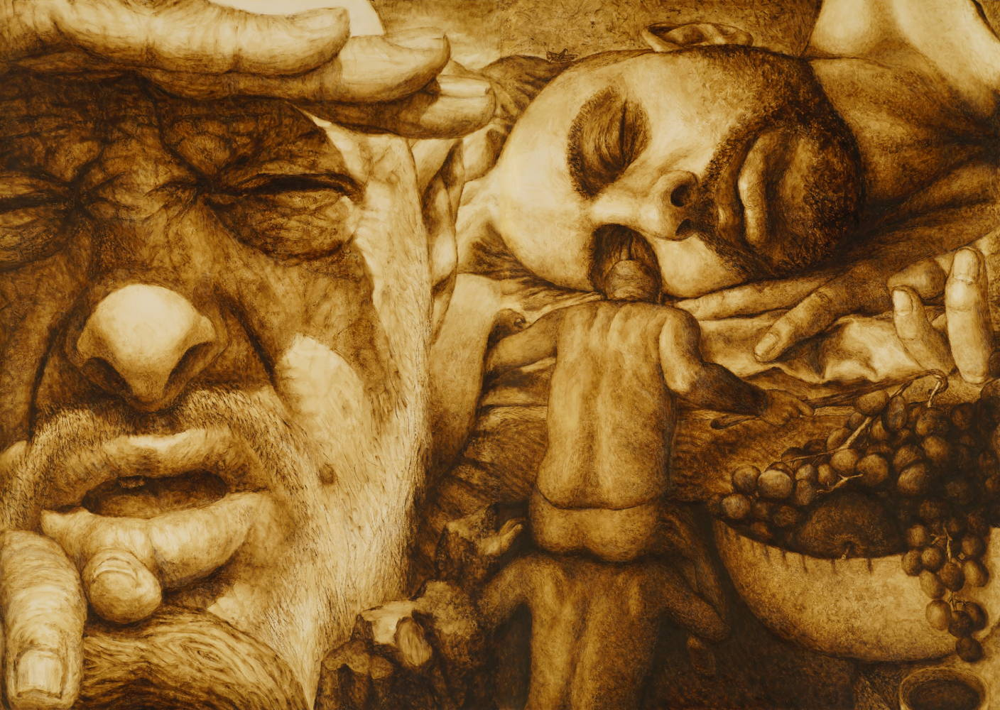

היסטוריה ארוכה של האנושות הינו פרויקט ציור באורך עשרות מטרים שמפותח בחצי העשור האחרון. הפרויקט שואף ליצור דימויים חדשניים לכמה מבין הנושאים הוותיקים ביותר בתולדות האמנות:
- תמטית, הפרויקט מציג את המיתוס היהודי-מקראי עם פרשנות עכשווית של אספקטים שונים שלו, כגון אלימות, מיניות והונאה.
- פיגורטיבית, הפרויקט משלב אסתטיקת "סלפי" עם קומפוזיציות קלאסיות, באמצעות פרספקטיבות ייחודיות המציבות את הצופה בנקודת המבט של הדמויות עצמן - ובתוך הסצנה.

מוטב כבר שנלך בגדולות
אז למה לנו כל הענין הזהמוטב כבר שנלך בגדולות
(דיון דחוף/דוד אבידן)
א. חזרה אל הסיפור הגדול
ביהדות, בניגוד לעולם הנוצרי, לא התקיימה מסורת פיגורטיבית בת מאות שנים שקדמה לאידאולוגיות המודרניזם, ולכן ניתן לזהות העדר ייצוגי בלב האמנות הישראלית. הפרויקט מסמן כיוון של מילוי החלל הפנוי הזה בתנועה של רנסאנס פיגורטיבי. כבכל שאיפה רנסאנסית של חידוש העתיק, הפרויקט חותר לשלב את הערכים הציוריים הקלאסיים, שבמרכזם יצירת דימוי עבור המיתוס, יחד עם התחדשות הדימוי בהתאם לתפיסה החזותית של המאה ה-21.
בבסיס הפרויקט ניצבת שאלה שאינה מרבה להישאל בשיח האמנות העכשווי: האם ניתן עוד לדמיין קפלה סיסטינית בת זמננו ששואפת לחבר את "הציור הגדול" עם "הסיפור הגדול"? כיצד יכול בכלל להתאפשר דימוי קנוני של המיתוס הקנוני, מהסוג שנוצר באמנות האירופאית הקלאסית, בעולם סובייקטיבי המתפצל לאינספור נקודות מבט ומפרק את המיתוסים הגדולים לרסיסים?
הפתרון אותו מציע הפרויקט נעוץ בהיפוך תפיסתי: הפיכת הבעיה עצמה לפתרון. מתוך תפיסה פיגורטיבית עכשווית, הפרויקט שם דגש מיוחד על סובייקטיביות הדימוי, תוך הפגנת מודעות בוטה לדרך שבה נקודת המבט עצמה היא היא המכוננת את הסצנה ומייצרת את משמעותה. בכך הוא פותח פתח לחזרה אל הסיפור הגדול ואל היכולת לייצג אותו בשפה פיגורטיבית חדשה - שלא הייתה קיימת בעולם הקלאסי - ולא רק בהקשר המקומי.
ב. חזרה אל הציור הגדול
מהו תפקיד הציור בעולם הכורע תחת הקלות הבלתי נסבלת של הצילום, שבו אינפלציה של דימויים מוזילה עד לאפס את משמעות הדימוי הבודד? הפרויקט בוחר שלא לייצג סיפור ראלי או אישי כלשהו, אלא את ה-סיפור של התרבות בה הוא פועל - זה שאף מצלמה לא תגיע עדיו, ולא רק מפני שהוא מתרחש בעבר, אלא מפני שהוא ממוקם במיתוס.
בעצם הבחירה שלא לייצר דימויי מציאות אלא דימויי מיתוס, הפרויקט מנסה לבחון האם הפונקציה הקלאסית של "אמנות גדולה" עדיין רלוונטית באמנות בת זמננו, שבה ה-סיפור הוא לרוב סיפור אישי. המענה של הפרויקט הוא התבוננות מנקודת מבט שהיא פרסונלית וייחודית במפגיע, אך איננה שרירותית או אינדיבידואליסטית, כי היא איננה מכוננת מבחוץ, בידי נקודת המבט של "האמן", אלא מבפנים, מתוך הסיפור, ובפרט מתוך מבטן של הדמויות. זוהי נקודת המבט של גיבורי הסיפור עצמם על הסיפור, תוך חתירה למבט המכונן מבפנים את המשמעות של הסיפור, ולעתים באמצעות מבטים משלימים היוצרים ביניהם את מרחב המשמעויות הסיפורי.
כך, הפרויקט נבדל הן מהמיינסטרים בעולם האמנות העכשווי, המחויב למיתוס האמן, והן מעולם הציור הריאליסטי, המחויב למציאות, ובוחר במחויבות למיתוס של התרבות. בראייה זו, רק חבירה לסיפור הגדול יכולה לכונן מחדש את הציור הגדול, כפי שידעו המאסטרים הגדולים.